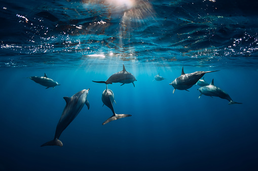

Marine Life

Most life forms evolved initially in marine habitats. By volume, oceans provide about 90% of the living space on the planet.
The earliest vertebrates appeared in the form of fish, which live exclusively in water. Some of these evolved into amphibians,
which spend portions of their lives in water and portions on land. One group of amphibians evolved into reptiles and mammals and
a few subsets of each returned to the ocean as sea snakes, sea turtles, seals, manatees, and whales.
Plant forms such as kelp and other algae grow in the water and are the basis for some underwater ecosystems.
Plankton forms the general foundation of the ocean food chain, particularly phytoplankton which are key primary producers.
Marine invertebrates exhibit a wide range of modifications to survive in poorly oxygenated waters, including breathing tubes as in mollusc siphons.
Fish have gills instead of lungs, although some species of fish, such as the lungfish, have both. Marine mammals (e.g. dolphins, whales, otters, and seals)
need to surface periodically to breathe air. More than 200,000 marine species have been documented, and perhaps two million marine species are yet to be documented.
Marine species range in size from the microscopic like phytoplankton, which can be as small as 0.02 micrometres,
to huge cetaceans like the blue whale - the largest known animal, reaching 33 m (108 ft) in length.
Marine microorganisms, including protists and bacteria and their associated viruses, have been variously estimated as constituting about 70% or
about 90% of the total marine biomass. Marine life is studied scientifically in both marine biology and in biological oceanography.
The term marine comes from the Latin mare, meaning "sea" or "ocean".